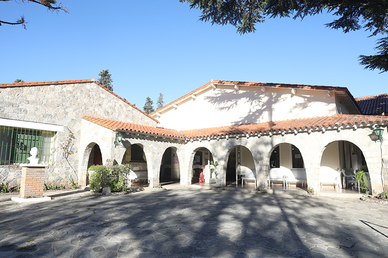
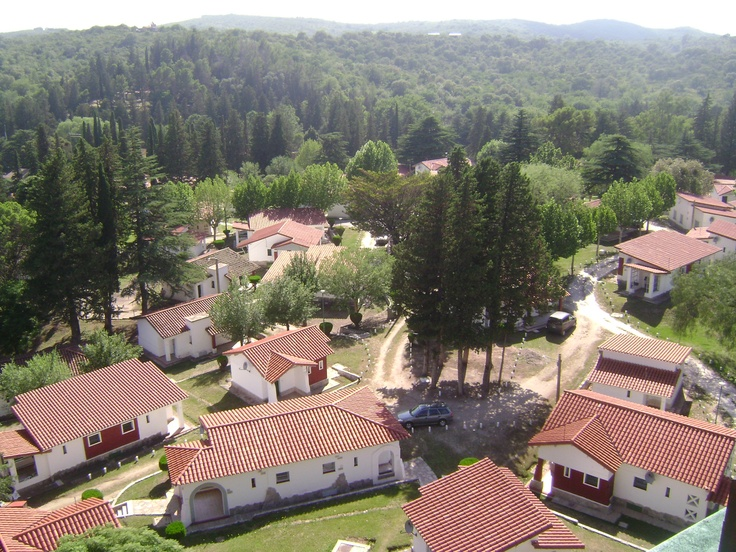
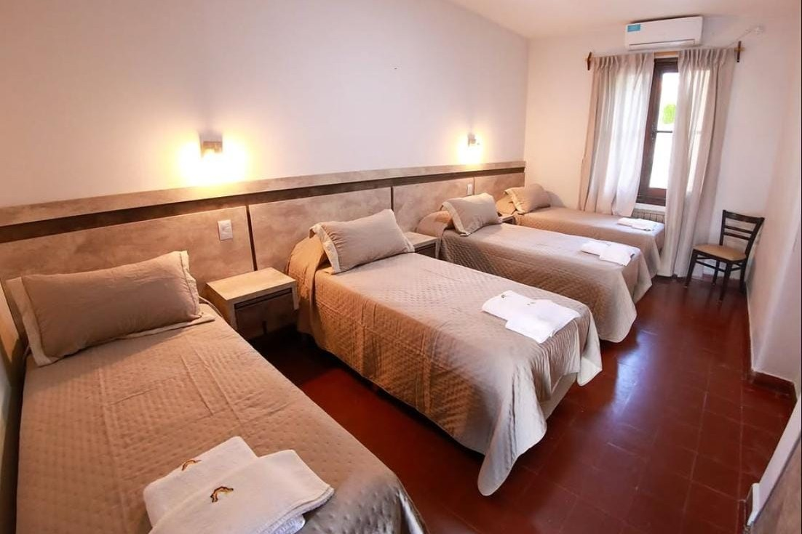
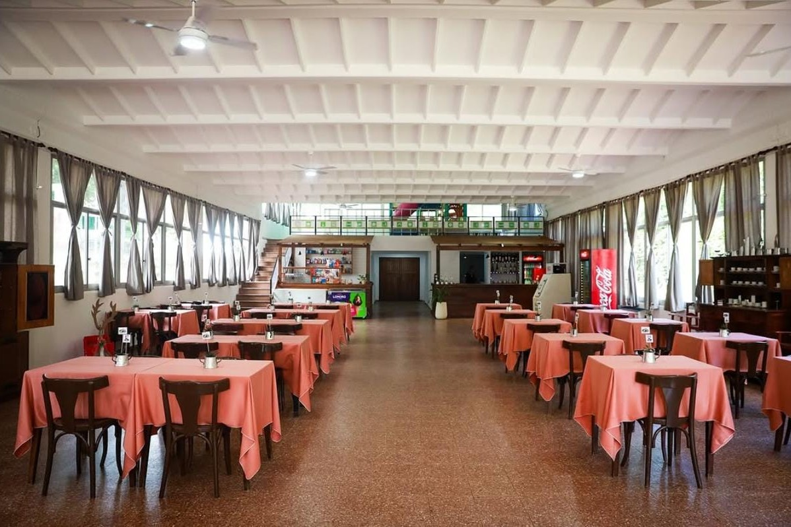
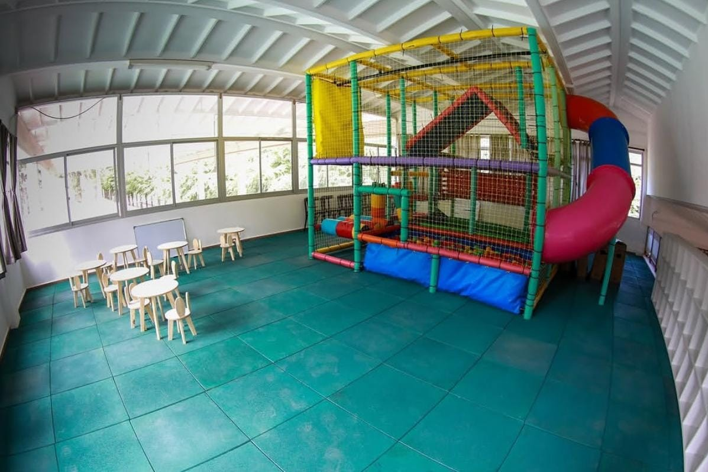
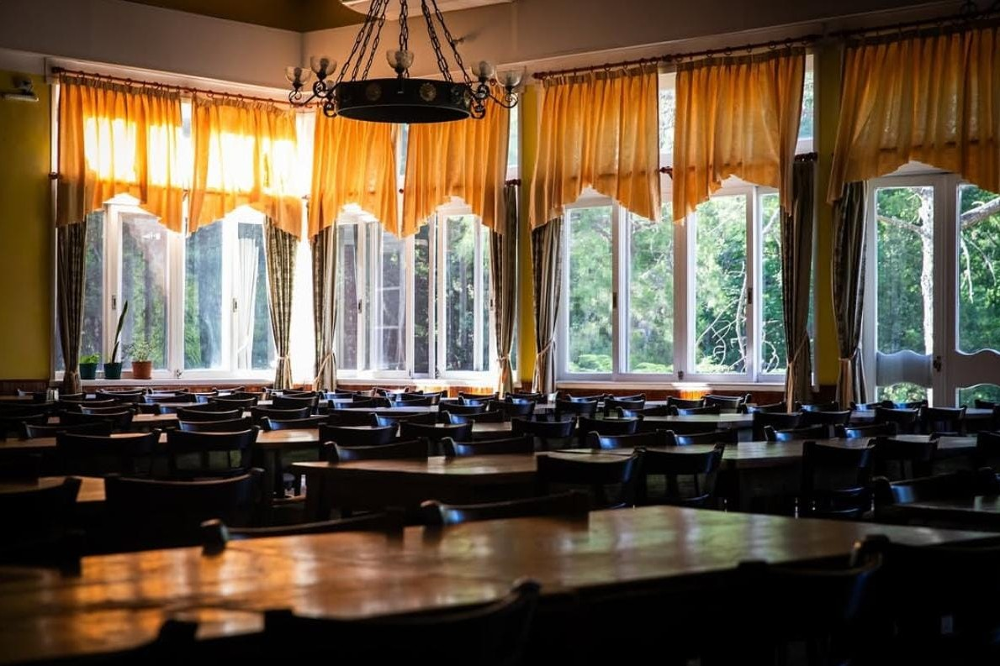
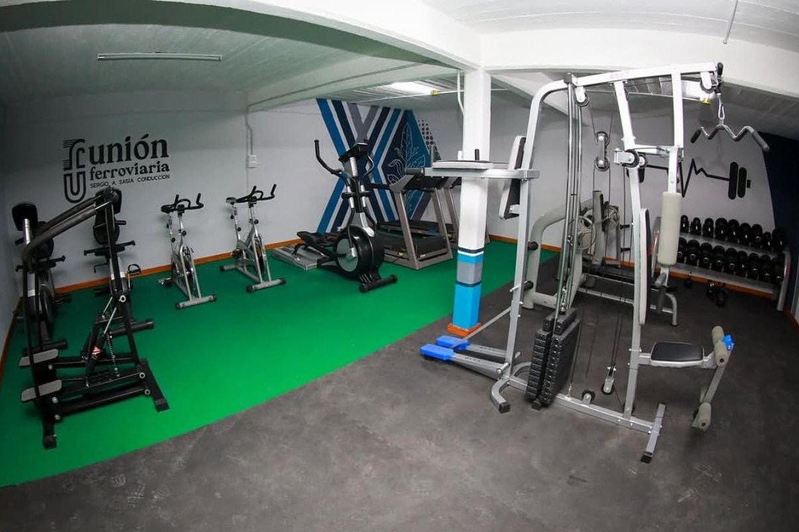
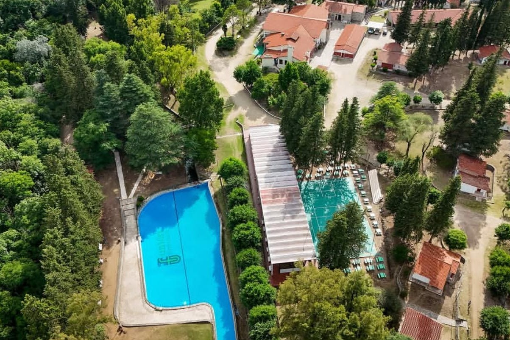

Colonia de Vacaciones Evita
Alta Gracia, Córdoba · Unión Ferroviaria
Conocé la colonia








Sobre la colonia
La Colonia de Vacaciones Evita se encuentra en Alta Gracia, Córdoba.
Cuenta con cabañas, espacios recreativos e instalaciones para disfrutar de una estadía en familia.
Instalaciones y servicios
- 150 cabañas.
- Piscina de agua natural de montaña.
- Canchas de pádel, fútbol 5, básquet, vóley y bochas.
- Gimnasio.
- Confitería y comedor.
- Quincho, parrillas y asadores.
- Cine y espacios de entretenimiento.
- Capilla.
Comodidades
- Aire acondicionado y calefacción.
- Televisión.
- Ropa blanca y servicio de mucamas.
- Desayuno y cena.
Horarios
- Ingreso: a partir de las 13:00.
- Salida: hasta las 10:00.
Ubicación
Paraje La Isla – La Paisanita, Alta Gracia, Córdoba.
Requisitos y documentación
- Estar adherido al Plan de Acción Social (P.A.S.).
- DNI del titular (frente y dorso).
- Último recibo de haberes.
- DNI de los acompañantes (frente y dorso).